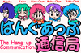

『はんぐあっぷミルちゃん番外編及びミルちゃんCG』保管庫
作成：平成17年01月23日
タイトルCG集
- 1996年4月～7月

- 初代タイトルCGです。この頃、「はんぐあっぷ通信局」は「Torino's Home Page」の1コーナでした。と、言っても「はんぐあっぷ通信局」以外にはCGコーナとずっと工事中で内容が無かった「浦和レッズ」のコーナしかなかったですが。
- 取り敢えず、タイトルCG描かなきゃと言うことで20分ぐらいでサッと描いたものです。(^^;)
- 1996年7月～9月

- 2代目タイトル。前タイトルCGよりは時間をかけて描きました。タイトル文字は初代のものをそのまま流用しました。手書き風なロゴが何となく気に入ったので。絵は夏向きにプールでのミル＆マコです。ドケチでカナヅチのマコちゃんは高校時代のスクール水着に浮き輪。
- 1996年9月～'97年5月

- 食欲の秋って事で、大食らいのミルちゃんに呆れるマコちゃんの図です。このタイトルを描いた後、色々私の身の回りでありまして「はんぐあっぷ通信局」自体が半年近くお休みになってしまったので、思いのほか長期間タイトルとして使ってしまいました。
- 1997年5月～'98年5月

- これは、「はんぐあっぷ通信局」のページそのものではなくて、その上のディレクトリの入り口部分に飾られていた絵です。なんか時間を掛けて描いた割にはぷっぷかぷー(意味不明の擬音)な絵ですが。まあ、なんつーか、ノーアイデアな作品です。
- 1997年5月～11月

- 半年間の休載期間を終えて、ページをリニューアルしたときのタイトル。今までのタイトル画の中では最も好きなタイトルです。切り絵風の処理は色々特殊効果いじっていて偶然出来たもの。ちなみにこの絵はプレゼント用に制作した時計とマウスパッドにも使用されました。
- 1997年11月～12月

- えーと、これはマコちゃんがモバイルで通信している隣で、ミルちゃんが携帯電話から出ている電波を捕まえて袋に詰めていると言う場面なんですが分かりました?(^^;
- むかーしのマンガだと電波が良く見えたんですが、最近は「電波が見えるんかー?!」ってツッコミが多いせいか、あまりそう言う場面は無いっすね。
- 1998年1月

- お正月スペシャルバージョンって事で1月1日から約2週間、短期間掲載されたもの。酒瓶抱えて幸せそうな寝顔のマコちゃんと気ぐるみ着ていつもの意味不明ポーズのミルちゃんです。まあ、普段はマコちゃんは絶対こう言いうビキニルックなんてしないんですが、酔っ払っちゃうと何でもありです(笑)。この絵もお気に入りのタイトルのひとつ。
- 1998年1月～3月

- 1月半ばを過ぎて「A Happy New Year」は無いっしょ。って～訳で急きょ冬向けに制作したタイトル。実は1996-97冬のタイトルにしようと思っていた絵のアイデアをそのまま使った作品。
- マコちゃんは運動神経が鈍くて好んでスポーツはしないんですが、スキーはミルちゃん誘われて良く行くようです。でもまあ、結果はこの通り。スキー場で転んで雪だるま状態になるって言うのは割とベタな表現ですが、実際にはスキー場の雪ってこんな風にならないんですよね。
- 1998年4月～5月

- 4月に入ってスキーは無いっしょって～訳で急きょ春向けに制作したタイトル。やっぱり花よりだんごのミルちゃんです。その行動に眉をひそめるマコちゃんですが、結局マコちゃんも花よりパソコンなのでした。
- 1998年5月～12月

- 季節に関連したタイトルだと長期間飾れないと言う反省から季節に関連性のないタイトルにしました。なんとなく某秋葉原の家電販売店のCMに似ちゃいましたが。(^^；
- 長期間飾れる絵柄にしたのを良い事にタイトル画の描き換えサボって結構長く飾っちゃいました。
- 1999年1月

- 1999年の年賀タイトルです。卯年と言うことでバニーガールにしてみました。相変わらずミルちゃんは意味不明ポーズ。去年よりは可愛い気な衣装にしたつもり。マコちゃんは苦手なバニースーツでちょっと照れ気味。それから「はんぐあっぷミルちゃん」10周年を勝手に記念して真中に10周年の文字を入れてみました。
- 最終版

イラスト及び番外編
- おすましマコちゃん

- マコちゃんの本名は舞子なのだな。背中に花背負わしたら緊張しちゃったんだな。
- 鳩の湯温泉でのOFF時にその場で描いたらくがき作品.

- 昔、11PMでやってた秘湯シリーズのパロディみたいなもの。
- レッズを応援するマコちゃん

- これもらくがきCGなんで、いいかげんでーす。製作時間15分。
- カッパっぱミルミル

- これは頭のお皿の太陽電池でパソコンを動かしているのであって、けっしてマコちゃんのパソコンに操られてミルちゃんが踊ってるって絵じゃないっす
- にせはんぐあっぷミルちゃん

- 他の方にミルちゃんを描いてもらったときタイトルに「にせ」とついた作品が多かったので、私自身も「にせ」が描きたくなったので描いた作品。
- メガネっ娘ユカちゃん

- Nifty FGALAGのメガネっ娘企画で描いた作品のおまけ。
バナー

奥付